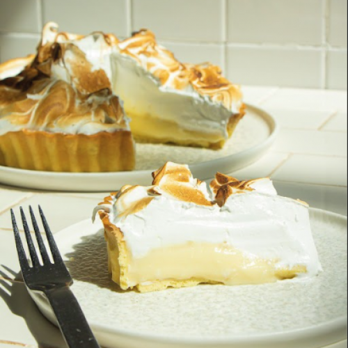

Recetas Dulces
- Harina 0000 300 g.
- Manteca 200 g.
- Azúcar 100 g.
- Yema 1 unid.
- Sal fina C/N.
- Yemas 4 unid.
- Leche 1/2 L.
- Jugo de limón 200 cc.
- Azúcar 200 g.
- Almidón de maíz 60 g.
- Manteca 1 cda.
- Ralladura de limón.
- Claras 4 unid.
- Azúcar 220 g.
- Agua 75 cc.
Lemon Pie
Ingredientes
Para el relleno:
Para el merengue:
- Batir la manteca pomada con el azúcar (podés usar azúcar mascabo).
- Agregar la yema y la esencia de vainilla. Una vez que esté bien emulsionado agregar la harina.
- Unir rápidamente y llevar a frío.
- Estirar la masa y fonsar un molde desmontable.
Hacer la masa:
- Colocar sobre el molde un papel film que cubra la totalidad de la masa, poniendo un un peso encima (puede ser porotos, garbanzos, etc).
- Cocinar pinchada con tenedor por 15 minutos a horno moderado, hasta que esté cocida totalmente.
Cocinar la masa:
- En una olla calentar la leche con la mitad del azúcar. Por otro lado, mezclar en un bowl el resto del azúcar con el almidón de maíz.
- Mezclar bien e incorporar las yemas, el jugo y la ralladura de limón. Una vez mezclado agregar la leche caliente y llevar a cocinar todo junto revolviendo siempre.
- Cocinar hasta que hierva por un minuto y retirar del fuego. Agregar la manteca y tapar con un film en contacto.
- Una vez que se enfríe la crema de limón, cubrir la masa de tarta.
Hacer la crema:
- Para hacer un merengue italiano colocar en un bowl las claras y batirlas a punto nieve.
- Por otro lado, se prepara el almíbar, para esto se debe llevar agua y azúcar a una olla a fuego fuerte hasta que el azúcar se funda formándose un almíbar espeso.
- Agregar este almíbar a las claras mientras se van batiendo por unos 7 minutos. Luego colocar un papel film en contacto.
Hacer el merengue:
